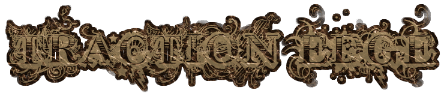

With clockwork machinations near,
And voices filled with dread,
I sense my future will unfold,
Towards the Traction Edge.
about
As a former constable in the outlying reaches of Victorian England, you are
recruited to a government organisation to help investigate some odd occurances
in the regions. What you uncover is unlike anything you've seen before. As you
become embroiled in conflict and mystery, it seems humanity itself is
on the verge of something far far greater.
Traction Edge is a steampunk turn based strategy game with roguelike elements.
It is similar in gameplay to UFO or Jagged Alliance where during a turn you
move all your units by spending Action Points. All movements and actions,
firing, inventory manipulation costs AP. Once your AP is all used up you end
your turn. The AI then takes it's turn.
development
Traction Edge is currently under development. It is playable but limited. It requires
SFML 1.6 (not 2.0) and cmake to build.
change Log
v0.3 March 2012
- Melee (Press A or simply move onto a blocked tile to attack)
- Procedural terrain (only farmland type so far)
- Static content currently removed
- XP gain gets you skill points to spend between levels
- New monster added
- First cut at balancing and progression
Next Milestone
- More monsters
- More procedural maps types
- More tuning
- Armour
Links
Traction Edge v0.3.tar.gz
Project Page
Dev Blog